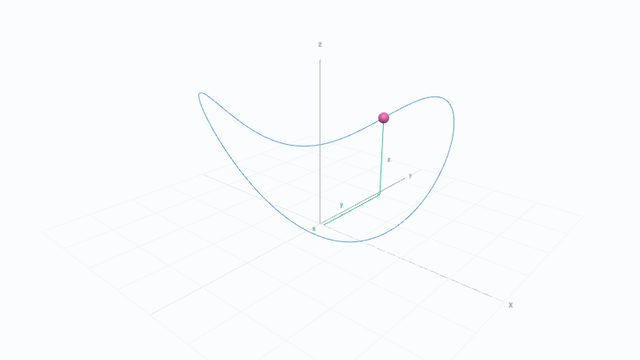
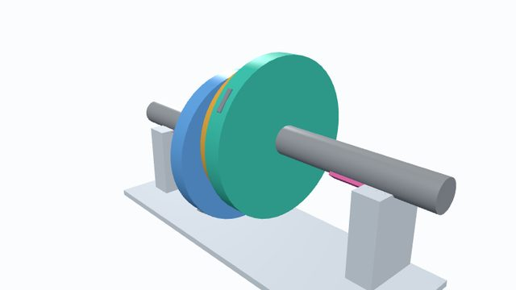
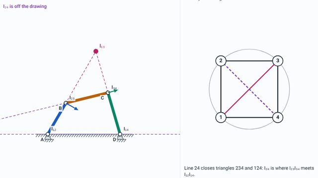
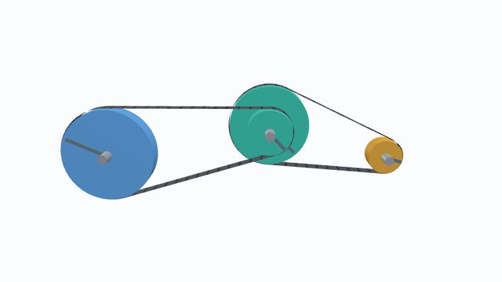
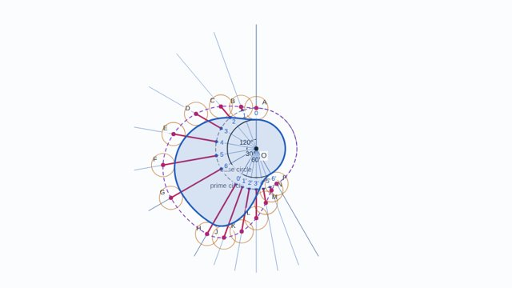
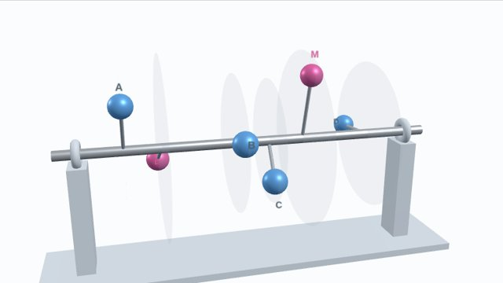

Interactive notes
All seven chapters of the course notes turned into pages you can play with: 3D models to turn round, animations of the constructions in the notes, live versions of every worked example (change the numbers and the working follows), and a short self-check at the end of each. They follow the notes section by section, so use them alongside the printed notes. Each chapter opens as slides: click, press → or Space for the next slide, ← to go back, or choose “Page view” to read it as one scrolling page. Press F or the “Full screen” button to present; the top bar disappears at once and comes back only while the mouse is at the very top edge, moving the slide down so nothing is covered.

Introduction to Machines
Branches of theory of machines, links, pairs and degrees of freedom, particle kinematics and kinetics.
- A particle in 3D in four coordinate systems
- s–t, v–t and a–t graphs with areas that integrate live
- Projectile launcher, moments, couples and a whirling mass
- Grubler and Kutzbach calculator

Simple Mechanisms
Links, constrained motion, pairs, chains, degrees of freedom, Grashof's law and the inversions of the three four-link chains.
- Pairs and kinds of constraint in 3D
- Chains that lock, move or flop, and joint counting
- Four-bar and slider-crank inversions, quick return mechanisms
- Examples 5.2 and 5.3, Oldham's coupling in 3D

Velocity and Acceleration
Instantaneous centres and Kennedy's theorem, relative velocity, rubbing velocity, mechanical advantage and acceleration diagrams.
- The six centres of a four-bar, step by step
- Velocity and acceleration polygons drawn live
- A 3D steam engine with velocity arrows
- Every worked example calculated exactly

Belt Drives
Types of belt drive, velocity ratio, slip and creep, length and angle of contact, tensions, power and V-belts.
- Eight kinds of belt drive running in 3D
- Belt length and angle of contact drawn to scale
- Tension growing round the arc; the speed for maximum power
- Examples 11.1 to 11.18

Toothed Gearing
Gear types in 3D, gear terms, the law of gearing, involute and cycloidal teeth, contact ratio, interference and undercut, minimum number of teeth.
- 7 gear types in 3D, with pitch surfaces
- Involute and cycloid drawn as they are generated
- A rack cutter undercutting a small pinion
- Examples 1 to 6

Cam Mechanisms
Followers and cams in 3D, cam terms, the four follower motions and their diagrams, and drawing cam profiles by inversion.
- Engine valve train, followers and a cylindrical cam in 3D
- Step-by-step construction of displacement diagrams
- A profile tool that builds the cam like the notes, then runs it
- Examples 1 to 4

Balancing Rotating Masses
Why balance, one mass in one or two planes, several masses in one plane, several masses in several planes.
- Spinning shafts in 3D that shake their bearings
- Draggable space diagram with the force polygon
- Couple and force polygons for several planes
- Examples 1 and 2